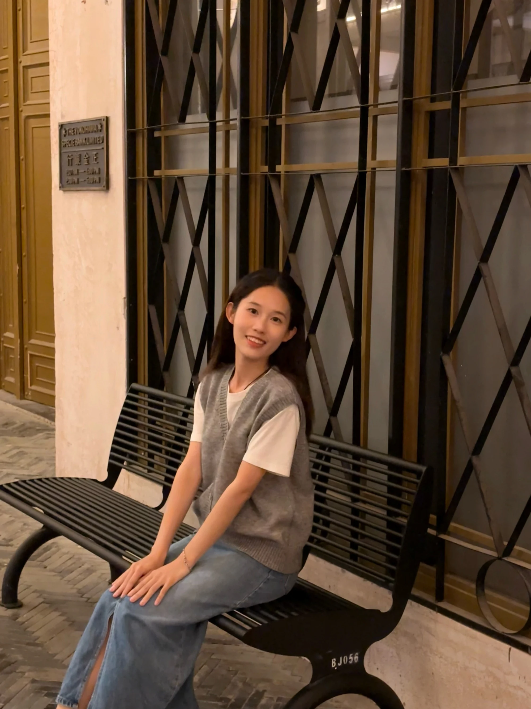

四品牌视觉资产
按产品线、人群、模特、穿搭与场景分类，整理提示词与模板，并进行组内宣导，减少重复找参考。
从产品卖点、视觉策划，到图片、视频与页面交付。
让 AI 进入真实业务，也让有效的方法被复用。
把品牌定位与活动主题，转成有一致光影、材质和生活氛围的页面。以 AI 场景生成与人工调整，减少对道具搭建和完整实拍的依赖。
品类导航、生活场景、材质与顾客图集，组织持续浏览的页面路径。
日常页面帮助用户理解产品系列；节日页面则把产品放进关系和情绪中。母亲节视觉以童年、成长和陪伴串联人物，在共同的湖畔环境中形成主题连续性。
右侧为母亲节页面选段，点击可看整套。视觉方案、参考组织、AI 生成与筛选、颜色调整、页面输出。基础产品素材作为生成依据，最终画面由人工判断与检查。
减少66.7%的人力投入；单次免去约700—1,000元道具采购。
传统方式还涉及道具采购、摄影、跟拍和后期安排。AI制作方式减少了这些环节的依赖，但不代表取消方案沟通与质量检查。
点击率提升 11.8%；转化率提升 13.6%。
以上为本人确认的旗舰店项目记录，未将其直接归属为此处某一新版页面的独立效果实验。经营变化可能同时受其他因素影响。9人日与3人日比较的是人力投入，不是自然日排期。
针对欧美模特、场景与产品匹配的问题，整理训练集、训练 LoRA，并调整既有 ComfyUI 工作流，探索可控的视觉生成。
我独立整理素材并训练了欧美街景、欧美女性模特两类 LoRA；调整既有节点与模型配置，用参考与遮罩控制产品替换，再检查人物、包型和场景是否可用。
训练与工作流应用，不是从零研发基础模型；样本效率不外推为全部产品的平均值。
整理训练素材与训练模型，调整既有工作流的节点和模型配置；将产品、模特或背景的生成需求拆开处理，通过参考图、遮罩与人工筛选约束结果。
风格统一、人物自然和产品结构正确是不同的检查项。合适的输出仍需判断包型、材质、细节与真实产品的差异；不能将探索样片自动视为已上线商品图。
Midjourney探索另存于素材档案，不与LoRA训练结果混作同一方法的证明。
不只生成一张图。以真实产品素材为基础，独立衔接视觉策划、AI逐图生成、PS精修、排版与三色延展，完成主图和A+商业交付。
交付41张图片，覆盖三色主图与A+。数量说明交付范围，工时对照说明本次制作方式的变化。
逐图提供产品与场景参考，重点控制包型、五金、内袋、比例与模特背法。AI生成之后，由我完成液化、修瑕、调色及版式，不能用“抽到一张好图”代替整套交付。
右侧为本次提供的摄影原图与精修图。取景与画布尺寸不同，分别查看，不作像素级对齐比较。
少量角度一次生成整套图，容易出现材质、五金、内袋和比例错误。因此按模特、容量、尺寸、细节分别组织真实参考，再人工修正。
参考素材组织、单图约束、多色延展与人工校色可继续复用。复杂结构补图有时比重拍更耗时，当前并非无人值守的新品自动生产系统。
以公司三色全拍全修标准71.25h与本次约42h投入比较，工时减少约41.1%。标准工时与实际估算存在口径差异，保留为本项目的阶段性验证。
用AI辅助拆解参考，人工确认画面逻辑；结合产品素材形成脚本，调整生成问题，再用剪映完成成片。
相对高74.4%，差5.66个百分点。数据为项目记录对照，不将经营变化归因为单一因素，也不直接分配给某条未核对的成片。
拍摄半天＋后期3天 → AI全流程约1天
制作时间减少约71.4%。
借助AI拆解参考视频的镜头、动作和信息节奏，人工确认拉片结果，再加入产品卖点、时长与素材要求。
在即梦生成后检查产品和动作表现，调整脚本或要求并重试，不把一次模型输出直接作为成片。
用剪映完成片段选择与剪辑。完整脚本与生成思路留作面试展开，不以一整页聊天记录代替说明。
不止自己多用一次AI。整理输入、执行规则与检查要求，基于现成Agent平台封装技能，验证后分享给同事使用。
首色成品＋目标色参考，保留模特、场景、构图与排版，减少其他颜色的重复处理。
在Linkfox验证换色效果，整理提示词与要求，封装成可下载分享的Skill。同事完成首色后可以直接调用，不需要每次重写完整指令。
10分钟对应整套初版换色环节，后续仍需下载、检查与修正偏色。截图中的单图试跑时间不是整套用时，不混为同一指标。
将派单、完工与审核中的重复录入，转为Agent执行、业务规则核对与必要的人工检查。
读取待处理任务
明确数量与工时等条件
按规则处理派单与完工
减少重复录入
检查工单关联与数据
异常信息请求人工确认
依据实际实践整理的流程示意，不是某个自研系统的界面截图。
实际试跑记录中出现过工时为空、工单关联不一致的情况。把这些情况纳入核对与人工确认，是让自动化进入业务的一部分，而不是只看一次成功执行。
独立梳理规则、验证执行和审核，再将技能提供给同事。支持配置定时执行，减少日常录入；自动运行仍需要必要的异常处理。
基于现成Agent能力整理与执行任务、封装Skill，不描述为从零开发Agent框架、ERP接口或基础模型。
每月原派单、完工和审核合计约24h，应用后检查进度不到1h，按人工时间计算减少超过95.8%。不是将Agent后台运行时长计算为零，也不代表永远无需维护。
把图库、提示词、模板、SOP和分工串起来。
从重复制作与交接问题出发，
形成可执行、可反馈的团队生产方式。
按产品线、人群、模特、穿搭与场景分类，整理提示词与模板，并进行组内宣导，减少重复找参考。
梳理策划和排版模板，明确摄影、AI生成与修图各环节的执行方式，使同事可以按共同标准制作。
整合修图任务表、前置确认需求，根据任务优先级、难度和成员技术效率分配工作，协调跨项目支援。
审核摄影与修图初稿，收集组员和销售反馈，组织交流分享，持续调整分工、模板和工作方式。
同等产出口径下的生产效率提升
单款平均工时69.97h → 60.76h
二季度对比一季度，单款平均工时下降
45.4h → 40.6h
承担箱包小组任务分配、审图和交付协调，推动资产、模板与执行标准整理。数据为团队在不同阶段的生产结果，不等同于所有成品由我独立制作。
15.16%以69.97/60.76−1计算，属于同等产出的生产效率提升；10.6%以(45.4−40.6)/45.4计算，属于工时下降。阶段不同，不相加、不画成一条连续增长曲线。
从信息层级、材质表达，到包装与内容方案。
以产品、人群与渠道为依据，
把创意转成具体的视觉物料。
暖色场景与麂皮材质表达。
生活方式与收纳、肩带信息。
使用情境与功能信息结合。
将产品功能拆成可扫描的信息模块。此处为成品展示，不附会未记录的经营提升数据。
品牌识别与正反面信息编排。
材质表达与护理信息层级。
平面视觉与包装结构，不作为量产实物照片。
不同尺寸下的信息与版式适配。
人物、产品与传播画面的组合表达。
参与两个服装品牌视觉校准手册、两个箱包品牌视觉规范手册的制作，围绕品牌调性、模特与场景、产品呈现、排版与渠道表达建立共同理解。
手册是团队协作成果，这里不将整本规范认定为本人独立主导。
从竞品的材质、品类、模特图和排版中提取参考，结合产品卖点组织新品画面、拍摄动作与信息层级；也参与视频脚本、服装外拍方案及现场协作。
完整手册、脚本与策划方案用于面试展开，不公开堆放全部原文件。

从亚马逊箱包视觉策划出发，我的工作逐渐延伸到AI图片、视频与页面的独立交付，以及Skill封装和团队流程应用。
我更关注生成之后的事：产品有没有失真，页面能不能使用，流程是否真正节省了时间，方法能不能被其他人继续使用。